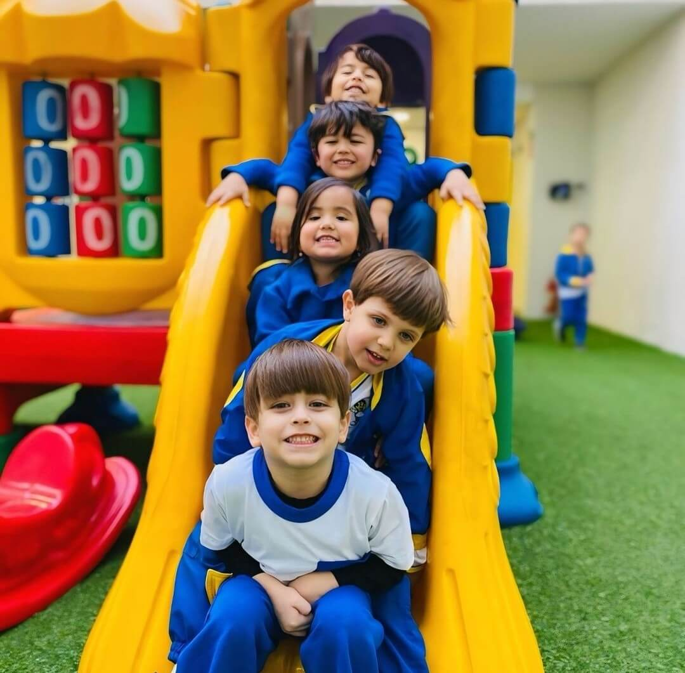
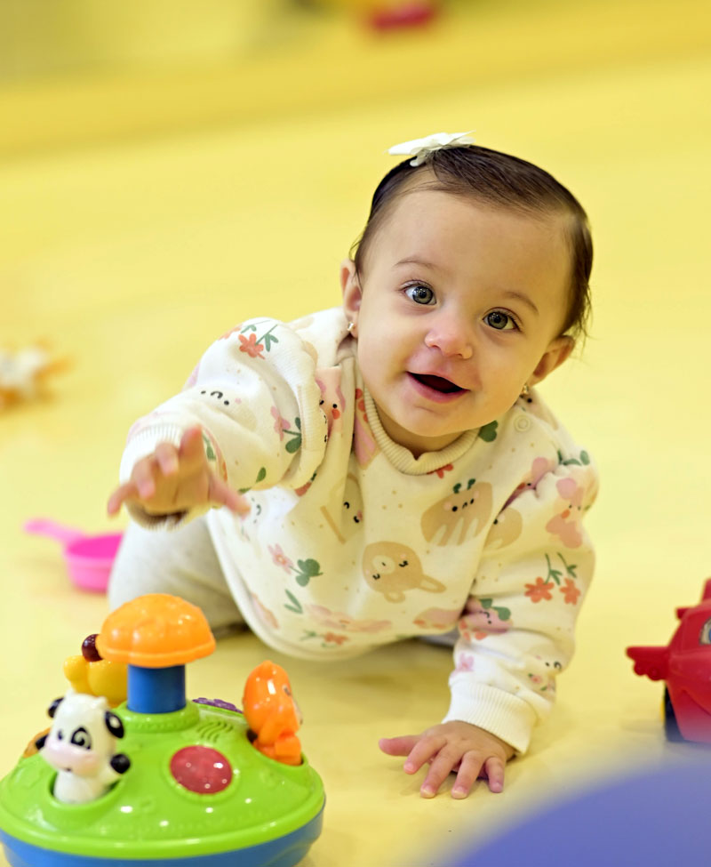
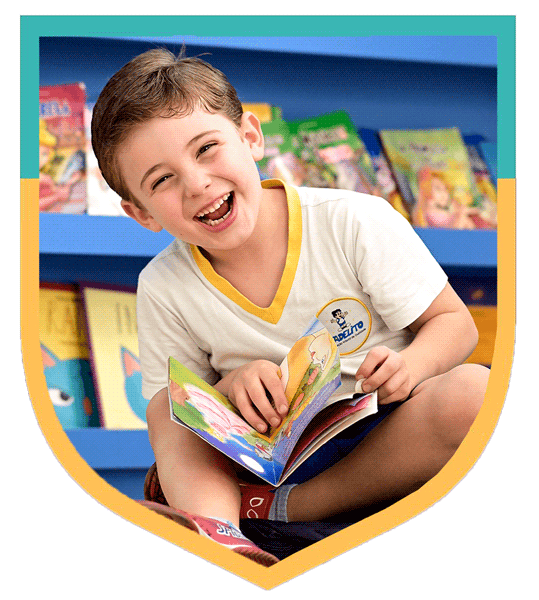
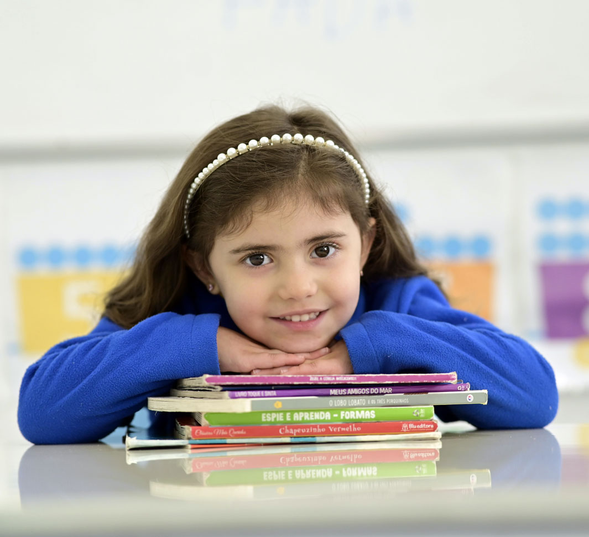
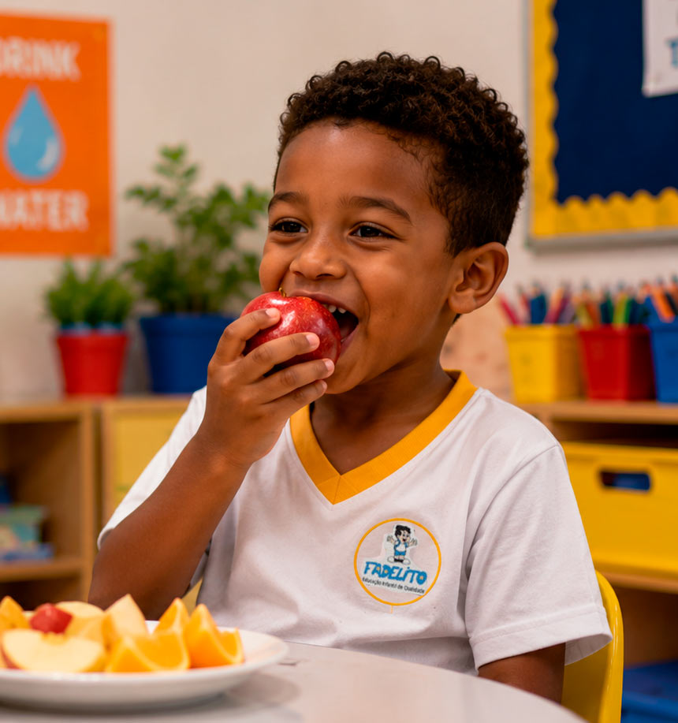

Neurociência no Fadelito
Os primeiros anos como oportunidades únicas para o futuro.
Uma educação que combina conhecimento, afeto e experiências para transformar os primeiros anos em grandes descobertas.

Uma proposta que une neurociência, afetividade e aprendizagem ativa para proporcionar experiências significativas em cada etapa da infância.
Os primeiros anos como oportunidades únicas para o futuro.
Um ambiente planejado para o desenvolvimento do seu filho.
Os melhores profissionais ao lado do seu filho.
Uma parceria constante entre escola e família.
Formando cidadãos conscientes, cooperativos e felizes.
Do Minimaternal ao Pré, cada etapa tem seu propósito.

Um programa multidisciplinar completo e exclusivo, desenvolvido para proporcionar um começo de vida saudável e repleto de estímulos.
Criado em parceria com Pedagogas, Pediatras e Fisioterapeutas especialistas em desenvolvimento infantil.
Nosso objetivo é proporcionar o desenvolvimento integral das crianças de 0 a 6 anos, em seus aspectos físicos, psicológicos, intelectuais e sociais.
Atividades que complementam o trabalho pedagógico, estimulam novas habilidades e aptidões e ensinam a conviver, respeitar e trabalhar em equipe.
Conheça a grade semanal e todos os benefícios de cada atividade.
Uma parceria que amplia horizontes e prepara as crianças para um mundo de possibilidades.
No Fadelito, o contato com a língua inglesa acontece de maneira natural, responsável e adequada a cada etapa do desenvolvimento infantil.
Nossa parceria com Cambridge fortalece a proposta de aprendizagem do inglês desde a primeira infância, por meio de experiências significativas e estimulantes.


Desenvolvido e atualizado anualmente pela Equipe Pedagógica, com base nos Referenciais Curriculares Nacionais para Educação Infantil e na Base Nacional Comum Curricular (BNCC).
Apostilas e cadernos de apoio promovem vivências práticas e interdisciplinares (STEAM), estimulando o raciocínio lógico, a criatividade e a reflexão.
Uma alimentação saudável, colorida e rica em nutrientes, preparada com cuidado e acompanhada por nutricionistas.

No Fadelito, acreditamos que a aprendizagem significativa floresce através de relações afetuosas. É por isso que nossa Proposta Pedagógica valoriza cada criança em sua singularidade, promovendo exploração e interações ricas em um ambiente seguro e acolhedor, construindo laços de confiança, carinho e amizade.
Você sabia que os primeiros anos de vida do seu filho são um período incrivelmente importante para o desenvolvimento do cérebro dele? A Neurociência nos mostra que 90% das conexões cerebrais são estabelecidas até os 6 anos – e, nos primeiros 2 ou 3 anos, mais de 1 milhão de novas conexões neurais se formam a cada segundo! Isso significa que as primeiras experiências do seu pequeno têm um impacto direto em como ele aprenderá, se relacionará socialmente e se adaptará a novas situações no futuro.
No Fadelito, vemos essa fase como uma janela de oportunidade preciosa. Nossa metodologia vai além do conteúdo, focando em promover experiências que estimulem o raciocínio lógico, o pensamento crítico e a capacidade de encontrar soluções de diversas formas. Nosso papel é provocar o pensamento, a reflexão e dar autonomia e protagonismo para que seu filho construa seu próprio conhecimento, tornando-se um aprendiz por toda a vida (Lifelong Learning).
Aqui, cada descoberta é permeada por afeto, confiança e segurança, onde seu filho será valorizado como um ser humano único e especial, e sua família será recebida e acolhida com o mesmo carinho e importância. Quando a criança se sente confiante, segura e com a autoestima elevada, livre para criar laços de amizade, ela se sente livre para questionar, investigar e descobrir. Ela é encorajada a superar desafios, crescer e se desenvolver, e é capaz de buscar os caminhos para alcançar tudo o que sonhar.
Inspiramo-nos em grandes educadores como Wallon, Piaget e Vygotsky, e alinhamos nossa prática às descobertas científicas mais recentes da Neurociência. Utilizamos Metodologias Ativas que colocam seu filho no centro do processo educativo, garantindo que ele seja um participante ativo e não apenas um ouvinte.
Nossa escola foi planejada nos mínimos detalhes para oferecer um espaço seguro e rico em estímulos.
Nossos brinquedos e materiais possuem certificação de segurança internacional. Contamos com um Departamento exclusivo de Arquitetura e Bem-estar que nos mantém atualizados com todas as novidades do mercado, garantindo conforto, modernidade e segurança para que seu filho aproveite cada momento, aprendendo, brincando e sendo feliz!
No Fadelito, vocação e amor pelo trabalho com crianças são nossas premissas! Nossa equipe é formada por educadoras e especialistas, todas selecionadas por um rigoroso processo do nosso Departamento de Recursos Humanos, composto por psicólogas, profissionais de RH e pedagogas do Departamento de Supervisão e Qualidade. Selecionamos não apenas pela formação, mas principalmente pela vocação.
Antes de atuar em nossa escola, cada profissional passa por um intenso processo de integração e treinamento, de 7 a 30 dias, com vivências teóricas e práticas. Eles só são certificados após alcançar 90% de acerto em uma avaliação sobre nosso modelo de segurança e protocolos. O treinamento é acompanhado por mentores em cada departamento, e parte dele é realizada em uma Plataforma Gamificada, que torna o aprendizado divertido e nos permite monitorar o desenvolvimento de cada profissional em tempo real.
Durante o ano, temos um Projeto de Formação Continuada com encontros semanais e um Fórum de Especialização mensal. É fundamental que toda a nossa equipe receba formação permanente, aprimorando processos e adquirindo novos conhecimentos para oferecer o melhor ao seu filho.
Acreditamos que o contato direto com os pais é fundamental nos anos iniciais. Por isso, mantemos uma comunicação constante através de reuniões pedagógicas, agendamentos personalizados, contato diário na entrada e saída, telefone e a agenda do aluno, onde você recebe informações sobre a rotina escolar.
Consideramos nossa Filosofia Humanista um dos pilares mais importantes do nosso trabalho. Nossas práticas visam o desenvolvimento emocional, o autoconhecimento e o preparo para a vida. Promovemos a construção de uma personalidade permeada por valores mais humanos, trazendo para a rotina dos alunos ações de solidariedade, empatia e amor ao próximo.
Ensinamos através de bons exemplos e práticas. No cotidiano escolar, nossa filosofia se manifesta em:
Trabalhamos reciclagem, consumo consciente de água, respeito à natureza, contato com a terra nas aulas de horticultura e o cuidado com todos os seres vivos do nosso planeta.
Realizamos campanhas de Páscoa (social), Natal (brinquedos usados), Dia Mundial da Alimentação (doação de pães) e um Projeto com o Pré, onde visitamos Lares de Idosos, permitindo que os alunos conversem, leiam histórias e compartilhem um dia especial. Todas essas ações contam com a participação engajada das famílias, ensinando às crianças que, ao oferecermos o nosso melhor para o mundo, o tornamos um lugar melhor para todos!
Ensinamos o respeito ao próximo, seja colega, alguém mais velho ou mais novo. Compreendemos que somos todos iguais e, ao mesmo tempo, diferentes, o que é maravilhoso! Incentivamos que, se pudermos, devemos sempre ajudar as pessoas, sem esperar nada em troca, movidos pela livre consciência do espírito de amar e respeitar nossos semelhantes.
Nosso Projeto é construído para assegurar a igualdade a todos os alunos em todos os momentos:
No Fadelito, todas as crianças têm as mesmas oportunidades de aprendizagem!
Trabalhar com os alunos, especialmente nessa idade em que se constroem valores fundamentais da personalidade e o valor do ser humano, é assegurar a formação de cidadãos conscientes, cooperativos e comprometidos com a qualidade do mundo que nos cerca, com a igualdade, com o respeito entre as pessoas e com a busca permanente de seu desenvolvimento cultural e emocional.
É assim que entendemos cada criança: um ser humano único e especial para nós, para sua família e para o mundo!
No Fadelito, cada etapa da educação infantil é cuidadosamente planejada para acompanhar o desenvolvimento único do seu filho, do Minimaternal ao Pré. Nossa metodologia incentiva a curiosidade natural, o aprendizado ativo e a construção de habilidades essenciais para um futuro brilhante.
Para os nossos pequenos do Minimaternal, criamos um ambiente que é um convite constante à descoberta e ao aprendizado natural. Com muita música, brincadeiras e interações, cada momento de convivência se transforma em uma nova conquista.
Nossa rotina de trabalho é rica em atividades que estimulam o desenvolvimento cognitivo, psicomotor e da linguagem do seu filho. Promovemos situações em que a criança tem a oportunidade de socializar e se integrar, ampliando e acelerando seu horizonte de conquistas. É o ponto de partida para um desenvolvimento pleno e feliz!
No Maternal I, damos um foco especial ao desenvolvimento da linguagem oral do seu filho. De forma lúdica e bem prática, estimulamos o aprimoramento de todas as suas percepções sensoriais: tato, paladar, olfato, audição e visão. Também apoiamos e promovemos ativamente as interações sociais, fundamentais nesta fase.
Este é um período muito importante, pois marca, para muitas crianças, a emocionante despedida das fraldas. As primeiras relações de amizade e a vontade de independência começam a florescer com o apoio de nossas educadoras e são impulsionadas pelas novas descobertas diárias. Seu filho desenvolverá a consciência corporal, o reconhecimento dos espaços e a comunicação será aprimorada por meio de músicas e histórias. Isso não só enriquece o vocabulário, mas também desenvolve a criatividade e a noção de tempo.
No Maternal II, continuamos a fortalecer o trabalho de socialização, mas com um foco maior na independência do seu filho. Nesta fase, percebemos que as crianças já demonstram um equilíbrio e coordenação de movimentos mais avançados, o que as encoraja a explorar mais o ambiente.
É aqui que começamos a explorar o mundo dos numerais e quantidades, das cores vibrantes e das primeiras formas geométricas como triângulo, círculo e quadrado. No Maternal II, seu filho também terá o contato inicial com a leitura e a escrita de forma leve e significativa, entendendo-as como uma forma de se comunicar e interagir com o mundo. Estimulamos esse aprendizado prazeroso e constante através da associação do som com figuras, desenhos, histórias envolventes, jogos divertidos e muitos outros recursos criativos.
No Jardim, seu filho terá a oportunidade de se familiarizar de forma concreta e divertida com os numerais (como se escrevem e suas quantidades). Começaremos a explorar as letras do alfabeto, partindo daquelas que compõem o nome dele e de seus amigos, avançando para outras palavras significativas em seu dia a dia. Ele começará a experimentar as primeiras ideias de como as palavras são escritas, de um jeito leve e natural.
É também no Jardim que a criança demonstra um interesse crescente pela leitura – tanto pela "leitura do mundo" ao seu redor quanto pela leitura das palavras. Ela começa a compreender o conceito de começo, meio e fim das histórias, exercitando a criatividade e construindo seus próprios enredos com um vocabulário cada vez mais rico.
Em todas as nossas atividades, a ludicidade está presente, tornando o aprendizado uma grande brincadeira. Desenvolvemos outras habilidades importantes, como a autonomia, o domínio do corpo (esquema corporal e lateralidade), a coordenação, a compreensão de espaço e tempo, e todas as percepções sensoriais (visuais, auditivas, táteis, gustativas e olfativas). Seu filho estará em constante desenvolvimento, aprendendo de forma integral e divertida!
No Pré, seu filho está encerrando um ciclo pedagógico incrível, construído desde o início da Educação Infantil. É o momento de colher os frutos de um trabalho focado na aquisição de autonomia, segurança, consciência e liberdade com responsabilidade, além de tantas outras conquistas, incluindo a tão esperada alfabetização.
Nesta fase, seu filho já é capaz de conectar o que aprendeu com as situações do dia a dia. Ele irá consolidar e ampliar seu conhecimento dos números, começando a fazer pequenos cálculos e operações matemáticas simples. Também aprofundará o aprendizado das letras, construindo sílabas, palavras e pequenas frases.
É no Pré que auxiliamos a criança a desenvolver a leitura e escrita espontânea, sempre acompanhando o ritmo e o processo individual de cada aluno. Oferecemos apoio e situações de crescimento que respeitam as individualidades, construindo bases sólidas para que seu filho inicie o Ensino Fundamental de forma segura e confiante. Ele estará pronto para os próximos desafios!
No Fadelito, desenvolvemos o Projeto Baby Learning, um programa multidisciplinar completo e exclusivo para bebês. Ele foi criado em parceria com uma equipe técnica de especialistas, incluindo Pedagogas, Pediatras e Fisioterapeutas com expertise em desenvolvimento infantil.
Nosso objetivo é garantir que seu bebê tenha um começo de vida saudável e repleto de estímulos, por isso o Baby Learning oferece:
No Fadelito, proporcionamos aos nossos bebês segurança, confiança e autonomia para que eles explorem o mundo através de suas próprias experiências diárias. Tudo isso em um ambiente transbordando carinho, acolhimento, amor e a atenção dedicada de uma equipe especializada, pronta para celebrar cada descoberta, conquista e muitas alegrias ao lado do seu filho.
As atividades extracurriculares na Educação Infantil, além de complementarem o trabalho pedagógico, têm o importante papel de estimular novas habilidades e aptidões, fazendo com que a criança amplie a sua visão de mundo, aprenda a conviver, respeitar o próximo, trabalhar em equipe e muito mais.
No Fadelito, desenvolvemos o Projeto Baby Learning, um programa multidisciplinar completo e exclusivo para bebês. Ele foi criado em parceria com uma equipe técnica de especialistas, incluindo Pedagogas, Pediatras e Fisioterapeutas com expertise em desenvolvimento infantil.
Nosso objetivo é garantir que seu bebê tenha um começo de vida saudável e repleto de estímulos, por isso o Baby Learning oferece:
No Fadelito, proporcionamos aos nossos bebês segurança, confiança e autonomia para que eles explorem o mundo através de suas próprias experiências diárias. Tudo isso em um ambiente transbordando carinho, acolhimento, amor e a atenção dedicada de uma equipe especializada, pronta para celebrar cada descoberta, conquista e muitas alegrias ao lado do seu filho.
Declarado pela UNESCO como o melhor esporte para a formação inicial das crianças, o Judô oferece inúmeros benefícios para o desenvolvimento integral do seu filho.
Ao praticar Judô no Fadelito, as crianças desenvolvem:
O Judô é muito mais do que um esporte; é uma verdadeira filosofia de vida. Ele ajuda as crianças a se tornarem seres humanos mais humildes e solidários, estimulando-as a descobrir seus próprios limites e, o mais importante, a aprender a conquistá-los e superá-los com resiliência e determinação.
O Ballet é uma linda fusão de diversas formas de arte, como a música, a dança e até a poesia. Mais do que isso, ele permite que a criança use o corpo como um incrível instrumento de expressão, manifestando sua criatividade e emoções.
No Fadelito, oferecemos aulas de Ballet em diferentes fases, sempre de forma lúdica e descontraída:
Nessas aulas, seu filho iniciará o aprendizado da técnica clássica de um jeito divertido. Além disso, ele desenvolverá:
A Psicomotricidade é a chave para que seu filho coordene seus movimentos e pensamentos, transformando ideias em ações. No Fadelito, nós estimulamos essa conexão fundamental de forma divertida e envolvente.
Através de circuitos, jogos e desafios, as crianças descobrem a incrível capacidade de se expressar com o corpo, enquanto desenvolvem habilidades essenciais em várias áreas:
É um aprendizado completo que prepara seu filho para os desafios da vida, de forma divertida e ativa!
Nossas oficinas de Culinária Lúdica Experimental transformam a cozinha em um laboratório de aprendizado e diversão! Aqui, a matemática surge de forma natural, ao medirmos as quantidades dos ingredientes. A linguagem é explorada na escrita e leitura das receitas, enquanto diversos outros conteúdos permeiam o universo dos nossos pequenos chefs:
É também durante essas aulas que seu filho tem a oportunidade de conhecer melhor os alimentos, descobrir seus nutrientes e entender a importância de uma alimentação saudável para o nosso crescimento e bem-estar. Assim, a culinária vai muito além de cozinhar: é uma experiência completa que estimula todos os sentidos e o conhecimento!
No Fadelito, o contato com a terra fofinha na nossa horta orgânica é uma experiência de aprendizado incrível para as crianças. É um espaço onde elas aprendem a cuidar da natureza e do meio ambiente de forma prática e divertida.
Com a horta, abordamos temas importantes como:
Plantar a semente, cuidar, regar, colher e depois comer os legumes e verduras que elas mesmas ajudaram a crescer, fresquinhos da nossa horta, é uma alegria e um orgulho indescritível para as crianças. Uma verdadeira experiência do "plantar para colher", que as conecta com a origem dos alimentos e a importância de uma vida saudável!
Em nossas aulas de musicalização, nosso objetivo é trazer o mundo mágico dos ritmos e dos sons para o dia a dia do seu filho. Através de atividades de criação, execução e apreciação musical, as crianças constroem conceitos de forma alegre e divertida.
A música também promove a criatividade, favorece a extroversão e aflora a comunicação. Cantando, desenvolvendo a coordenação motora com gestos, produzindo sons com o próprio corpo e até confeccionando instrumentos musicais, os alunos:
Seu filho vai se encantar e aprender muito com a melodia!
Sabemos que, desde muito cedo, as crianças desenvolvem a linguagem e um vocabulário rico, onde os sons são a base para a escrita. Para garantir que seu filho tenha uma comunicação clara e uma alfabetização de sucesso, é essencial que a introdução de um novo idioma na primeira infância seja feita de forma responsável e segura.
Por isso, no Fadelito, seu filho tem aulas de inglês 2 vezes por semana no Maternal I e todos os dias do Maternal II ao Pré!
O Fadelito mantém sua proposta de ensino de inglês e parceria educacional Cambridge, apresentada na seção Cambridge desta landing page.
O mundo hoje está repleto de oportunidades oferecidas pela tecnologia e a natural curiosidade das crianças sobre os equipamentos que envolvem este universo torna-se cada dia mais precoce.
O Fadelito Tec propõe uma imersão ao universo tecnológico, utilizando recursos diferentes como ferramentas pedagógicas (a tecnologia torna-se um meio para a aprendizagem e não o fim dela). Os alunos têm a oportunidade de pesquisar e aprofundar conhecimentos em Desktops, Ipads, Óculos de Realidade Virtual, utilizam energia solar e exploram diferentes elementos, fomentando o pensamento computacional e enriquecendo os estudos realizados em sala de aula.
Na Iniciação à Tecnologia, apresentamos para as crianças as diversas formas em que podemos utilizar a internet em nossos estudos e pesquisas, empoderando-as a buscar as informações e assim promovendo na escola a Cultura Maker, originária do movimento DIY – Do it Yourself.
Vivemos em uma sociedade onde somos bombardeados por estímulos o tempo todo. Infelizmente, vemos cada vez mais cedo crianças sofrendo com ansiedade, falta de concentração e foco, dificuldade em lidar com emoções, frustração e baixa autoestima.
A capacidade de autorregulação, criatividade, iniciativa e habilidade de se adaptar a novas situações já são aptidões importantes e serão fundamentais em um futuro muito próximo.
Sabemos que a Inteligência Emocional — a habilidade de lidar consigo mesmo, com o outro e com o mundo — começa a se construir na primeira infância. É por essa razão que o Fadelito inclui em sua grade de atividades um projeto de Inteligência Emocional e Mindfulness.
Seu filho terá duas aulas por semana de atividades dedicadas a essas habilidades, a partir do Maternal II. Nosso objetivo é equipá-lo com as ferramentas emocionais necessárias para prosperar em um mundo em constante mudança.
As aulas de arte na educação infantil são muito mais do que um momento de brincadeira e criatividade; elas são fundamentais para o desenvolvimento integral do seu filho. É através da arte que as crianças exploram o mundo ao seu redor, expressam sentimentos e constroem conhecimentos de forma única.
No Fadelito, valorizamos cada traço e cada cor que seu filho produz, entendendo que cada atividade artística é um passo importante em sua jornada de desenvolvimento. Queremos que ele explore, crie e se descubra através da magia da arte!
Projeto que busca a transformação, não só das crianças, mas de toda a nossa comunidade escolar, aflorando o autoconhecimento, a confiança, incentivando relações e interações sociais mais positivas e um olhar de respeito e gratidão para a natureza e para o mundo que nos cerca.
Utilizando Metodologias Ativas (Aprendizagem Baseada em Projetos), trabalhamos em cada mês um tema diferente, com uma abordagem que objetiva a evolução pessoal em 4 aspectos fundamentais:
No Fadelito, seu filho aprende com um Material Próprio, desenvolvido e atualizado anualmente pela nossa Equipe Pedagógica. Esse material é criado com base nos Referenciais Curriculares Nacionais para Educação Infantil e na nova Base Nacional Comum Curricular (BNCC), garantindo que o aprendizado esteja sempre alinhado às melhores práticas educacionais.
Nossas apostilas e cadernos de apoio promovem vivências práticas e interdisciplinares (STEAM), transformando o aprendizado em algo divertido e prazeroso. Incentivamos a construção do conhecimento de forma lúdica, estimulando o raciocínio lógico, a criatividade e a reflexão, e proporcionando às crianças múltiplos olhares sobre cada tema.
Durante as atividades, seu filho é convidado a questionar e explorar seus próprios caminhos e soluções, seguindo as Metodologias Ativas. Por isso, valorizamos a liberdade, a autonomia, as vivências e as experiências individuais de cada criança, respeitando seu ritmo e suas descobertas.
Adotamos uma organização trimestral com abordagem interdisciplinar, pautada nos Campos de Experiência da Educação Infantil. Em vez de divisões por disciplinas tradicionais, proporcionamos vivências integradas que estimulam o desenvolvimento global da criança.
Além de todo o material acima, a comodidade e a tranquilidade da sua família são prioridades no Fadelito. Por isso, todo o material de papelaria que seu filho precisa (lápis, giz de cera, guache, papéis variados, cola, estojo, tesoura, lixa, lãs e todos os itens para as atividades) já está incluso na Taxa de Material Escolar. Isso garante economia para os pais, e segurança e igualdade para todos os alunos, que utilizam materiais padronizados e de qualidade.
Pensando em celebrar cada momento especial, os presentes e toda a estrutura para as festividades das Datas Comemorativas (Dia das Mães, Páscoa, Dia dos Pais, Dia das Crianças e outras) também estão inclusos. Assim, garantimos que todas as crianças e famílias participem igualmente dessas celebrações em nossa escola, criando memórias inesquecíveis.
No Fadelito, a alimentação do seu filho é levada a sério! Contar com uma Cozinha Profissional significa garantir os melhores ingredientes, com total segurança e higiene no preparo. Tudo isso resulta em um sabor e qualidade que só um especialista poderia oferecer.
Nosso cardápio é desenvolvido e acompanhado de perto por nutricionistas, utilizando alimentos frescos e os melhores fornecedores. As compras são realizadas diariamente para garantir a máxima qualidade e frescor.
Com um cardápio saudável, colorido e rico em nutrientes, seu filho terá a oportunidade de explorar novas texturas, aromas e sabores em refeições preparadas diariamente e servidas aqui na escola com todo carinho! É mais saúde e alegria no dia a dia do seu pequeno.